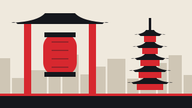

浅草寺
Senso-ji
Tokios ältester Tempel, gegründet im Jahr 628. Durch das rote Kaminarimon-Tor mit der riesigen Laterne gehst du über die Einkaufsstrasse Nakamise-dori bis zur Haupthalle.
Tipp: Früh morgens kommen: Das Gelände ist immer offen, und vor 8 Uhr hast du es fast für dich allein.